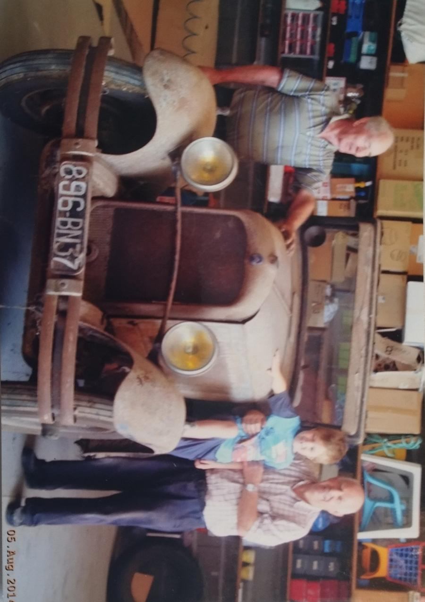
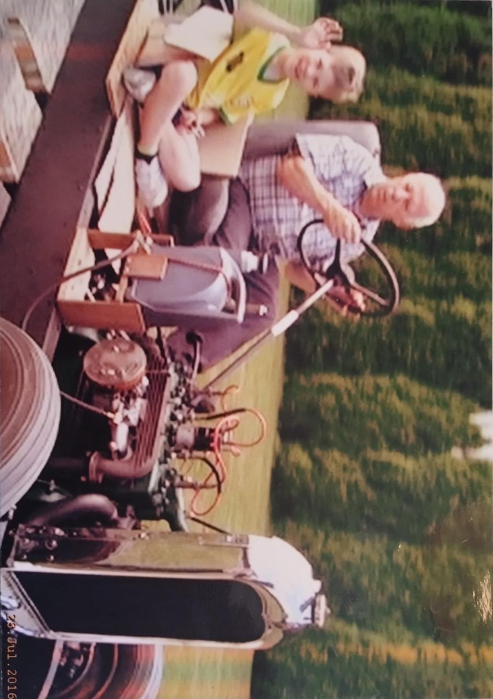
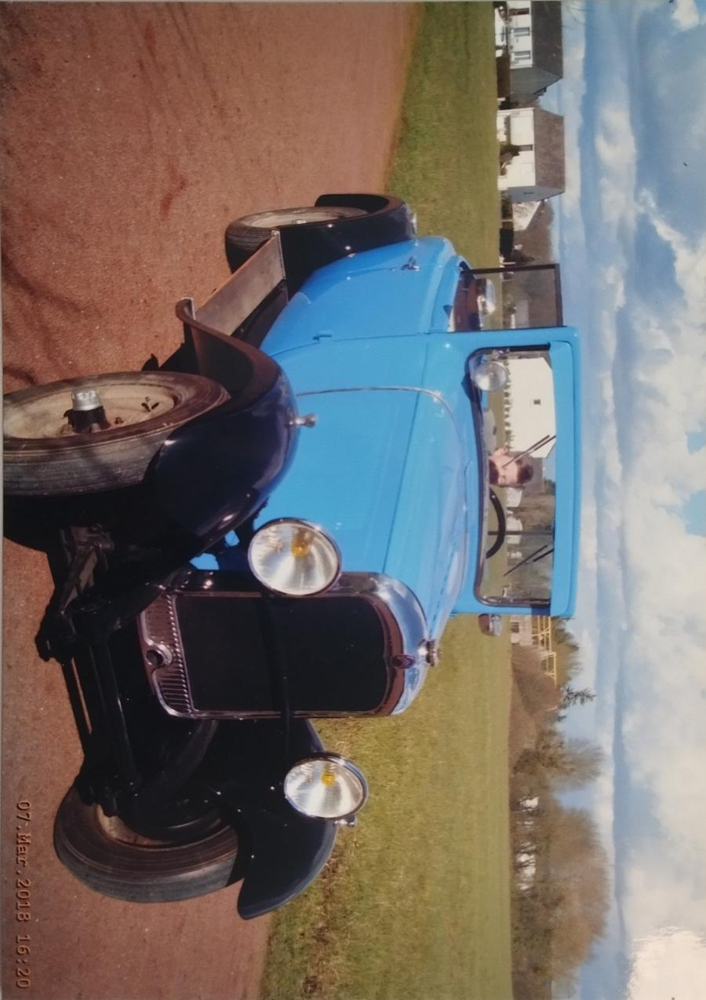
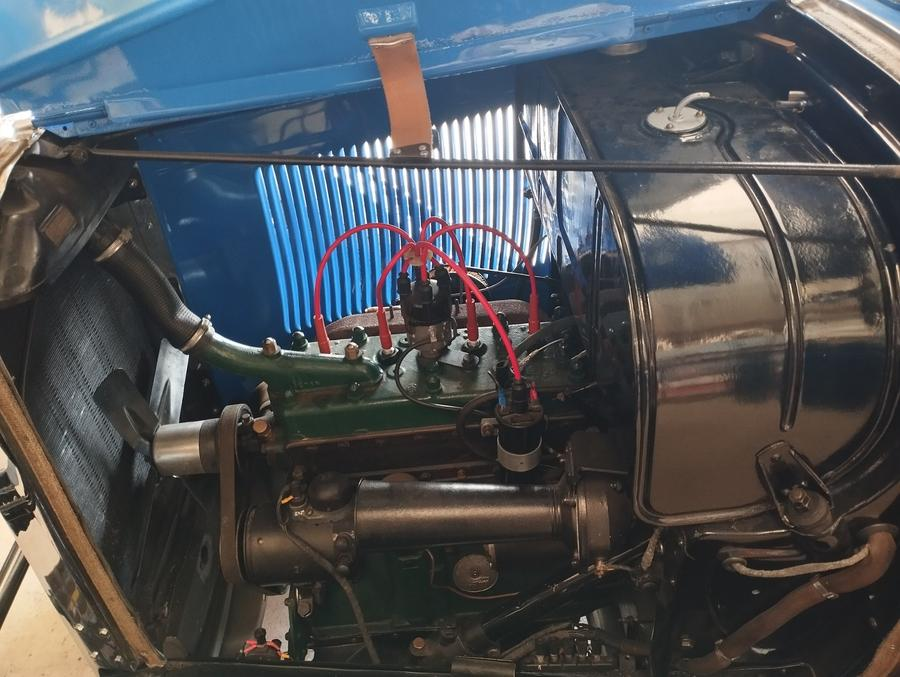
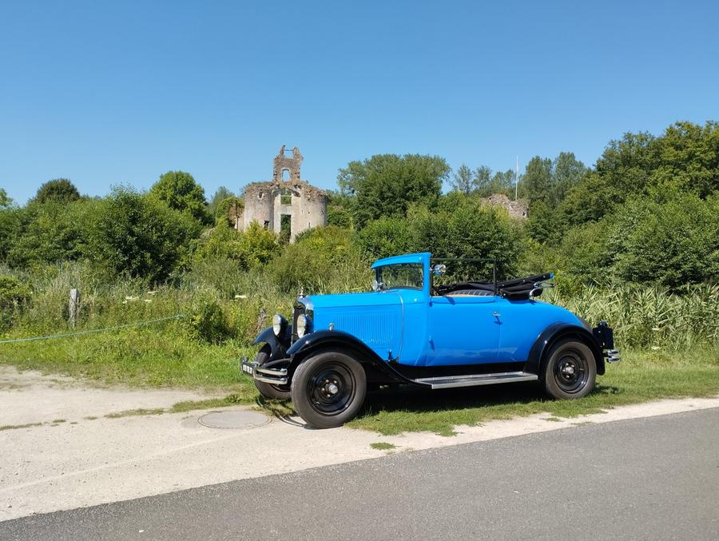
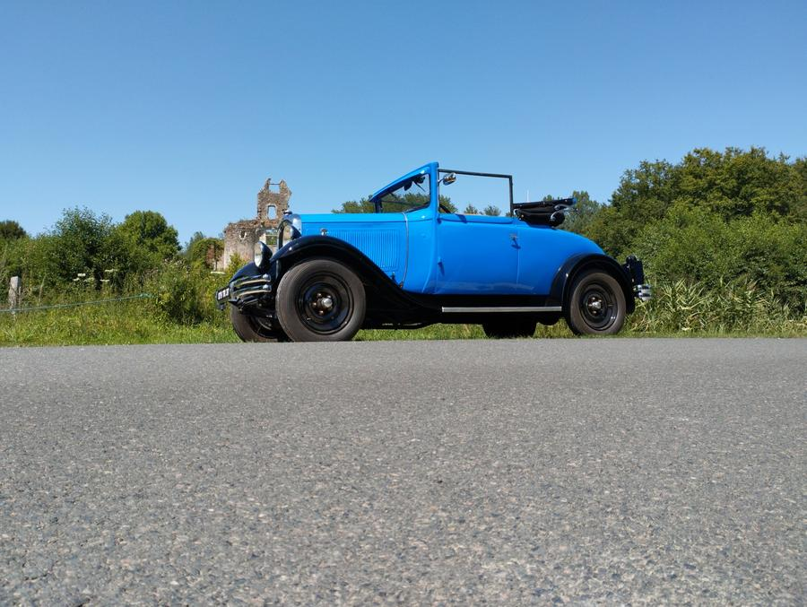
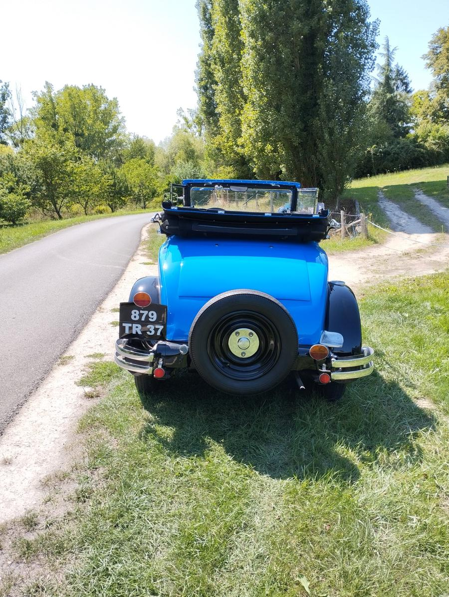

À l'âge de 6 ans, j'ai demandé à mon grand-père, collectionneur de voitures anciennes, s'il était possible de rénover une vieille Citroën C4F de 1933. Il a accepté, et nous avons commencé à la restaurer ensemble — un projet familial qui dure depuis plusieurs années.
La restauration a consisté à remettre en état la carrosserie, réviser le moteur et remplacer les pièces usées par l'âge. Ce travail de longue haleine m'a permis d'apprendre les bases de la mécanique ancienne, de la carrosserie et de l'entretien d'un véhicule de collection.
La Citroën C4F est une voiture française produite entre 1928 et 1932. Elle représente l'une des premières voitures populaires de Citroën, dotée d'un moteur 4 cylindres et d'une carrosserie en acier. Retrouver une C4F encore restaurable est rare aujourd'hui, ce qui rend ce projet d'autant plus précieux.
La restauration a nécessité de trouver des pièces d'époque, de reprendre la peinture d'origine (bleu et noir), de réviser le système de freinage et d'allumage, et de remettre en état la capote et la sellerie.



Cliquer sur l'image ou les boutons pour voir l'évolution de la restauration
Le moteur de la C4F est un 4 cylindres en ligne d'origine, entièrement révisé lors de la restauration. Le câblage d'allumage a été refait avec des fils rouges visibles, et le bloc moteur a été repeint dans sa couleur d'époque.



